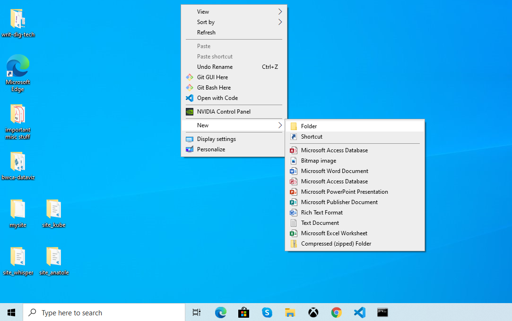

Command line interface
There are two common ways to interact with most computers: the graphical user interface (GUI) and the command line interface (CLI) Most people are only familiar with the graphical user interface-- the system of graphical elements (e.g., windows, buttons, icons) that we can use to interact with our operating system.
A less common, but incredibly useful way to interact with our computer is the command line interface. The CLI is a program that allows you to interact with your computer not through graphical elements, but rather through text-based commands. On Mac, the program used to interact with the CLI is called Terminal and on Windows it's called Command Prompt.
A simple, illustrative example¶
If it's helpful, you might think of a GUI as a program that issues text-based commands behind the scenes so you don't have to. In fact, several common tasks can be performed with either the GUI or CLI. For example, creating a new folder on your desktop.
Creating a new folder on your desktop (Windows 10)

Above: creating a new folder via GUI (Windows 10)
Above: creating a new folder on your desktop via CLI (Windows 10)
Why use the command line?¶
I have a mouse and applications...why even bother with the command line?
- Fosters a deeper understanding of how digital systems work
- Allows you to interact with systems to which you don't have graphical interface access
- Some functions are only available via CLI
- Can be more efficient for certain tasks